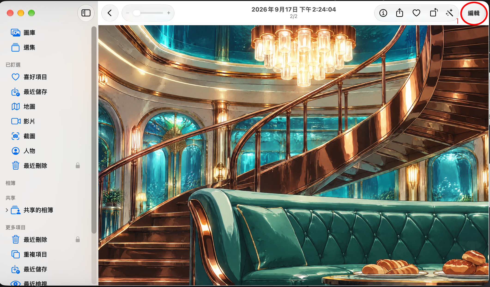
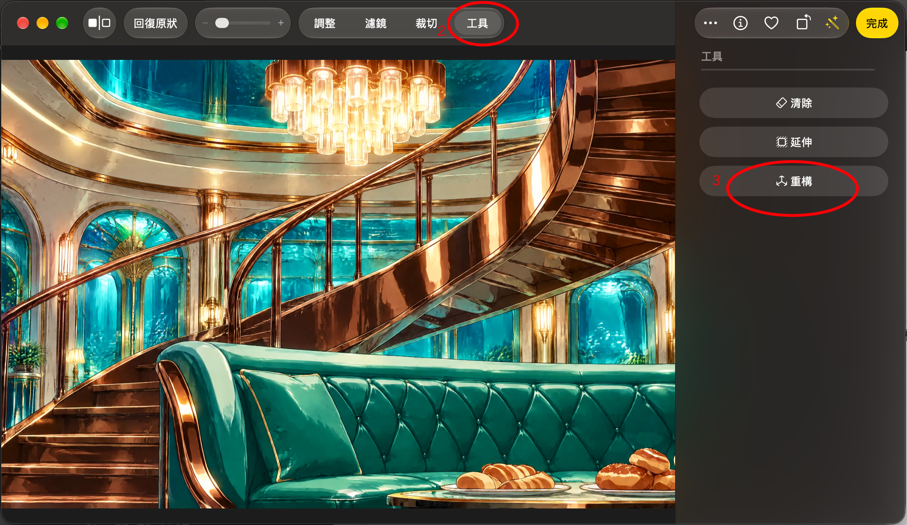
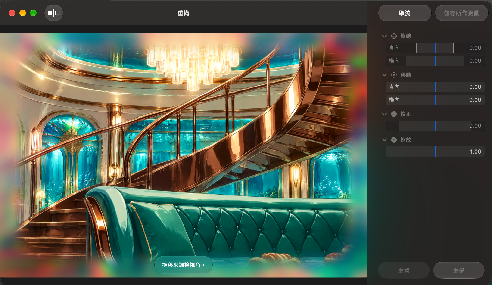
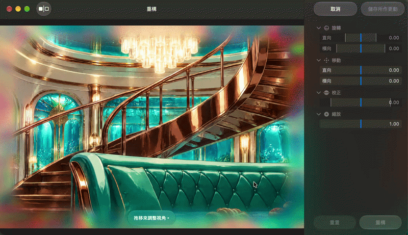
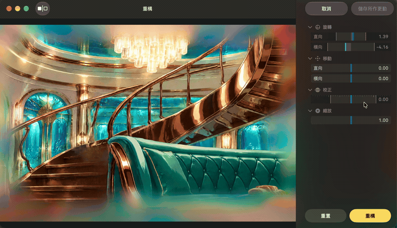
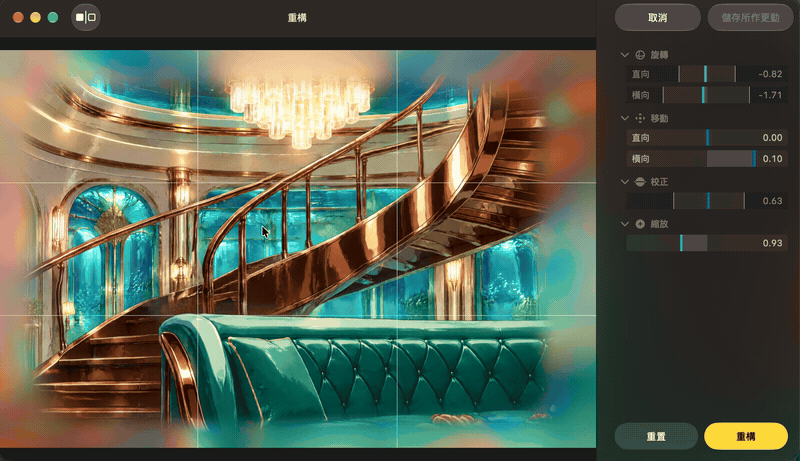

01
選好照片，進入編輯
在「照片」中開啟想調整的圖片，點右上角的「編輯」（紅圈 1）。

02
從「工具」開啟「重構」
先點上方「工具」（紅圈 2），再點右側「重構」（紅圈 3）。

03
調整視角，確認後儲存
直接拖曳照片調整視角；需要微調時，再使用右側滑桿。

- 旋轉
- 調整角度
- 移動
- 調整位置
- 校正
- 修正傾斜
- 縮放
- 調整大小
動態操作示範
觀看實際調整過程。動畫會循環播放，也可以暫停後對照畫面。
示範 1 · 調整視角

示範 2 · 持續微調

示範 3 · 套用重構結果
